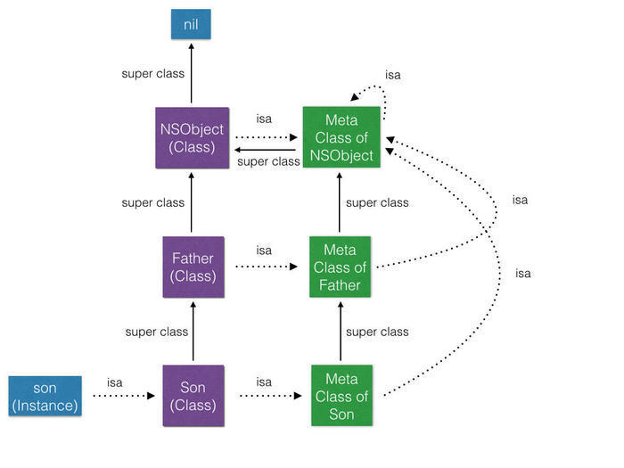

Runtime
前言
- 常见使用场景
- 动态改变方法的执行体
- Method Swizzling
- NSSelectorFromString，NSClassFromString…
- 动态添加属性（主要是类别）
- 动态遍历属性和方法，动态为类添加方法（写Model类的wrapper很有用）
- 消息转发机制使得架构更容易
一、初识runtime
Objective C语言把能在运行期做的事情就推迟到运行期再决定。这就意味着，Objective C不仅需要一个编译器，而且需要一个运行期环境。这个运行期环境就是Runtime。
runtime就是运行时，在实际开发中使用runtime的场景并不多，但是了解runtime有助于我们更好的理解OC的原理，从而提高开发水平。
runtime很强大，是OC最重要的一部分也是OC最大的特色，可以不夸张的说runtime成就了OC，尽管runtime是OC的一个模块而已。
我们都知道高级编程语言想要成为可执行文件需要先编译为汇编语言再汇编为机器语言，机器语言也是计算机能够识别的唯一语言，但是OC并不能直接编译为汇编语言，而是要先转写为纯C语言再进行编译和汇编的操作，从OC到C语言的过渡就是由runtime来实现的。然而我们使用OC进行面向对象开发，而C语言更多的是面向过程开发，这就需要将面向对象的类转变为面向过程的结构体。
通过runtime源码分析&Clang编译器，可以深入理解runtime是如何将面向对象的类转变为面向过程的结构体。
所有的Apple开源代码都可以在Apple Open Source上找到。
Runtime是用C和汇编写的，并且它是开源的。
LLVM工程包含了一组模块化，可复用的编辑器和工具链。同其名字原意(Low Level Virtual Machine)不同的是，LLVM不是一个首字母缩写，而是工程的名字。目前LLVM包含的主要子项目包括:
| 项目 | 描述 |
|---|---|
| LLVM Core | 包含一个现在的源代码/目标设备无关的优化器，一集一个针对很多主流(甚至于一些非主流)的CPU的汇编代码生成支持。 |
| Clang | 一个C/C++/Objective-C编译器，致力于提供令人惊讶的快速编译，极其有用的错误和警告信息，提供一个可用于构建很棒的源代码级别的工具. |
| dragonegg | gcc插件，可将GCC的优化和代码生成器替换为LLVM的相应工具。 |
| LLDB | 基于LLVM提供的库和Clang构建的优秀的本地调试器。 |
| libc++、libc++ ABI | 符合标准的，高性能的C++标准库实现，以及对C++11的完整支持。 |
| compiler-rt | 针对"__fixunsdfdi"和其他目标机器上没有一个核心IR(intermediate representation)对应的短原生指令序列时，提供高度调优过的底层代码生成支持。 |
| OpenMP | Clang中对多平台并行编程的runtime支持。 |
| vmkit | 基于LLVM的Java和.NET虚拟机实现 |
| polly | 支持高级别的循环和数据本地化优化支持的LLVM框架。 |
| libclc | OpenCL(开放运算语言)标准库的实现 |
| klee | 基于LLVM编译基础设施的符号化虚拟机 |
| SAFECode | 内存安全的C/C++编译器 |
| lld | clang/llvm内置的链接器 |
二、面向过程的结构体
Objective-C有许多有趣的数据类型，但是经常被误解。
很多类型可以在#import <objc/objc.h>即路径为/usr/include/objc/objc.h下找到定义（或者在相同目录下的其他文件中）。
id
#if !OBJC_TYPES_DEFINED
/// An opaque type that represents an Objective-C class.
typedef struct objc_class *Class;
/// Represents an instance of a class.
struct objc_object {
Class _Nonnull isa OBJC_ISA_AVAILABILITY;
};
/// A pointer to an instance of a class.
typedef struct objc_object *id;
#endif
通过注释和代码不难发现，我们创建的继承NSObject的对象或实例其实就是一个objc_object结构体，而我们常用的id也就是这个结构体的指针。
不同于void *(可以指向任何类型的指针)
nil
#ifndef nil
# if __has_feature(cxx_nullptr)
# define nil nullptr
# else
# define nil __DARWIN_NULL
# endif
#endif
等同于C语言中的 NULL ；在 Objective-C 中表示一个指向 对象 的空指针。(该对象没有存储任何内存地址)
Nil
#ifndef Nil
# if __has_feature(cxx_nullptr)
# define Nil nullptr
# else
# define Nil __DARWIN_NULL
# endif
#endif
与 nil 唯一的不同之处是在 Objective-C 中， Nil 表示一个指向 类 的空指针。（该类没有存储任何内存地址）
SEL
/// An opaque type that represents a method selector.
typedef struct objc_selector *SEL;
类成员方法的指针，但不同于C语言中的函数指针，函数指针直接保存了方法的地址，但SEL只是方法编号。
objc_selector又是什么鬼？
objc_selector基于不同的内核(GNU Objective-C runtime/NeXT Objective-C Runtime)有不同的定义。
在Mac OS X(基于NeXT Objective-C Runtime)中，SELS被映射为C strings。
例如：如果我们定义了Foo类的一个实例方法- (int)blah，那么代码NSLog(@"SEL = %s", @selector(blah));输出的结果为SEL = blah。
IMP
/// A pointer to the function of a method implementation.
#if !OBJC_OLD_DISPATCH_PROTOTYPES
typedef void (*IMP)(void /* id, SEL, ... */ );
#else
typedef id _Nullable (*IMP)(id _Nonnull, SEL _Nonnull, ...);
#endif
一个函数指针,保存了方法的地址
Method
typedef struct objc_method *Method;
struct objc_method {
SEL method_name; //方法名称
char *method_types; //参数和返回类型的描述字串
IMP method_imp; //方法的具体的实现的指针
};
Method定义在objc/objc-class.h中，现在只能在objc/runtime.h中看到定义：
/// An opaque type that represents a method in a class definition.
typedef struct objc_method *Method;
Method包含了方法名，参数和返回类型的描述字串，方法的具体的实现的指针。
Class
类在OC中是objc_class的结构体指针
typedef struct objc_class *Class;
在objc/runtime.h中objc_class结构体的定义如下：
struct objc_class {
Class _Nonnull isa OBJC_ISA_AVAILABILITY; // 指向元类的指针
#if !__OBJC2__
Class _Nullable super_class OBJC2_UNAVAILABLE; // 父类
const char * _Nonnull name OBJC2_UNAVAILABLE; // 类名
long version OBJC2_UNAVAILABLE; // 类的版本信息，默认为0
long info OBJC2_UNAVAILABLE; // 类信息，供运行期使用的一些位标识
long instance_size OBJC2_UNAVAILABLE; // 该类的实例变量大小
struct objc_ivar_list * _Nullable ivars OBJC2_UNAVAILABLE; // 该类的成员变量链表
struct objc_method_list * _Nullable * _Nullable methodLists OBJC2_UNAVAILABLE; // 方法定义的链表
struct objc_cache * _Nonnull cache OBJC2_UNAVAILABLE; // 方法缓存
struct objc_protocol_list * _Nullable protocols OBJC2_UNAVAILABLE; // 协议链表
#endif
} OBJC2_UNAVAILABLE;
/* Use `Class` instead of `struct objc_class *` */
什么是元类(metaclass)？
元类就是类对象的类。每个类都有自己的元类，因为每个类都有自己独一无二的方法。
简单点说就是： 当你给对象发送消息时，消息是在寻找这个对象的类的方法列表。（实例方法） 当你给类发消息时，消息是在寻找这个类的元类的方法列表。（类方法）
那元类的类是什么呢？ 元类，就像之前的类一样，它也是一个对象。你也可以调用它的方法。自然的，这就意味着他必须也有一个类。
所有的元类都使用根元类（继承体系中处于顶端的类的元类）作为他们的类。这就意味着所有NSObject的子类（大多数类）的元类都会以NSObject的元类作为他们的类
根据这个规则，所有的元类使用根元类作为他们的类，根元类的元类则就是它自己。也就是说基类的元类的isa指针指向他自己。

实例对象是一个结构体，这个结构体只有一个成员变量，指向构造它的那个类对象，这个类对象中存储了一切实例对象需要的信息包括实例变量、实例方法等，而类对象是通过元类创建的，元类中保存了类变量和类方法，这样就完美解释了整个类和实例是如何映射到结构体的。
.h,.m,.mm,.cpp等区别
.h ：头文件。头文件包含类，类型，函数和常数的声明。
.m ：源代码文件。这是典型的源代码文件扩展名，可以包含Objective-C和C代码。
.mm ：源代码文件。带有这种扩展名的源代码文件，除了可以包含Objective-C和C代码以外还可以包含C++代码。仅在你的Objective-C代码中确实需要使用C++类或者特性的时候才用这种扩展名
.cpp：只能编译C++
当你需要在源代码中包含头文件的时候，你可以使用标准的#include编译选项，但是Objective-C提供了更好的方法。#import选项和#include选项完全相同，只是它可以确保相同的文件只会被包含一次。Objective-C的例子和文档都倾向于使用#import。
.m 和.mm 的区别是告诉gcc 在编译时要加的一些参数。当然.mm还可以命名成.m,但在编译时要手动加参数（麻烦）
如果你的OC代码里面有包含C++的引用或代码，将此类更改为.mm即可
注意#import或#include的位置要在.mm文件里，如果在.h头文件里是没用的
Clang (C/C++/Objective-C编译器)
- 使用Clang将.m文件(Objective-C、C)编译为.cpp文件（c、c++）
终端示例
//
// main.m
// Runtime
//
// Created by MountainX on 2018/3/8.
// Copyright © 2018年 MTX Software Technology Co.,Ltd. All rights reserved.
//
#import <Foundation/Foundation.h>
#import <objc/runtime.h>
@interface Father : NSObject
@end
@implementation Father
@end
@interface Son: Father
@end
@implementation Son: Father
- (instancetype)init {
if (self = [super init]) {
NSLog(@"%@", NSStringFromClass([self class]));
NSLog(@"%@", NSStringFromClass([super class]));
}
return self;
}
@end
int main(int argc, const char * argv[]) {
@autoreleasepool {
NSLog(@"Hello World!");
Son *son = [[Son alloc] init];
}
return 0;
}
打开终端(Terminal)，通过cd命令进入main.m文件所在目录，使用clang命令：
$ clang -rewrite-objc main.m
然后你目录下就会从写一个cpp文件，内容比较多你可以搜索关键方法对照查看。
部分C++代码如下：
//main.cpp
//code...
extern "C" __declspec(dllimport) void * objc_autoreleasePoolPush(void);
extern "C" __declspec(dllimport) void objc_autoreleasePoolPop(void *);
struct __AtAutoreleasePool {
__AtAutoreleasePool() {atautoreleasepoolobj = objc_autoreleasePoolPush();}
~__AtAutoreleasePool() {objc_autoreleasePoolPop(atautoreleasepoolobj);}
void * atautoreleasepoolobj;
};
#define __OFFSETOFIVAR__(TYPE, MEMBER) ((long long) &((TYPE *)0)->MEMBER)
static __NSConstantStringImpl __NSConstantStringImpl__var_folders_jx_pt5945yn4r3d17_0bmq4tnkw0000gn_T_main_1dc212_mi_0 __attribute__ ((section ("__DATA, __cfstring"))) = {__CFConstantStringClassReference,0x000007c8,"%@",2};
static __NSConstantStringImpl __NSConstantStringImpl__var_folders_jx_pt5945yn4r3d17_0bmq4tnkw0000gn_T_main_1dc212_mi_1 __attribute__ ((section ("__DATA, __cfstring"))) = {__CFConstantStringClassReference,0x000007c8,"%@",2};
static __NSConstantStringImpl __NSConstantStringImpl__var_folders_jx_pt5945yn4r3d17_0bmq4tnkw0000gn_T_main_1dc212_mi_2 __attribute__ ((section ("__DATA, __cfstring"))) = {__CFConstantStringClassReference,0x000007c8,"Hello World!",12};
//code...
#ifndef _REWRITER_typedef_Father
#define _REWRITER_typedef_Father
typedef struct objc_object Father;
typedef struct {} _objc_exc_Father;
#endif
struct Father_IMPL {
struct NSObject_IMPL NSObject_IVARS;
};
/* @end */
// @implementation Father
// @end
#ifndef _REWRITER_typedef_Son
#define _REWRITER_typedef_Son
typedef struct objc_object Son;
typedef struct {} _objc_exc_Son;
#endif
struct Son_IMPL {
struct Father_IMPL Father_IVARS;
};
/* @end */
// @implementation Son: Father
static instancetype _I_Son_init(Son * self, SEL _cmd) {
if (self = ((Son *(*)(__rw_objc_super *, SEL))(void *)objc_msgSendSuper)((__rw_objc_super){(id)self, (id)class_getSuperclass(objc_getClass("Son"))}, sel_registerName("init"))) {
NSLog((NSString *)&__NSConstantStringImpl__var_folders_jx_pt5945yn4r3d17_0bmq4tnkw0000gn_T_main_1dc212_mi_0, NSStringFromClass(((Class (*)(id, SEL))(void *)objc_msgSend)((id)self, sel_registerName("class"))));
NSLog((NSString *)&__NSConstantStringImpl__var_folders_jx_pt5945yn4r3d17_0bmq4tnkw0000gn_T_main_1dc212_mi_1, NSStringFromClass(((Class (*)(__rw_objc_super *, SEL))(void *)objc_msgSendSuper)((__rw_objc_super){(id)self, (id)class_getSuperclass(objc_getClass("Son"))}, sel_registerName("class"))));
}
return self;
}
// @end
int main(int argc, const char * argv[]) {
/* @autoreleasepool */ { __AtAutoreleasePool __autoreleasepool;
NSLog((NSString *)&__NSConstantStringImpl__var_folders_jx_pt5945yn4r3d17_0bmq4tnkw0000gn_T_main_1dc212_mi_2);
Son *son = ((Son *(*)(id, SEL))(void *)objc_msgSend)((id)((Son *(*)(id, SEL))(void *)objc_msgSend)((id)objc_getClass("Son"), sel_registerName("alloc")), sel_registerName("init"));
}
return 0;
}
//code...
可以看出OC的runtime通过objc_msgSend函数将一个面向对象的消息传递转为了面向过程的函数调用
使用Clang命令进行编译（相比于Xcode运行，可以单独的编译文件并运行）
cd到要编译的工程目录
使用clang命令
$ clang -fobjc-arc -framework Foundation AAAA.m -o BBBB
备注：
$符号是终端命令提示符，不是需要输入的内容
-fobjc-arc表示编译器需要支持ARC特性
-framework Foundation表示引用Foundation框架
AAAA.m为需要进行编译的源代码文件
-o BBBB表示输出的可执行文件的文件名
3、执行该BBBB文件
$ ./BBBB
终端示例
$ clang -fobjc-arc -framework Foundation main.m -o main
该命令会在同级目录下创建命名为main的可执行文件(文件类型：Unix executable)
$ ./main
运行该文件后终端输出：
2018-03-08 15:53:27.732 main[19323:274933] Hello World!
2018-03-08 15:53:27.733 main[19323:274933] Son
2018-03-08 15:53:27.733 main[19323:274933] Son
也可以双击打开（默认使用终端打开）
Last login: Thu Mar 8 14:13:00 on ttys001
/Users/MountainX/Desktop/main ; exit;
mxr-pcdeiMac:~ mxr$ /Users/mxr/Desktop/main ; exit;
2018-03-08 15:51:51.631 main[19284:273721] Hello World!
2018-03-08 15:51:51.632 main[19284:273721] Son
2018-03-08 15:51:51.632 main[19284:273721] Son
logout
[进程已完成]
objc_msgSend
在OC中，如果向某对象传递消息，那就会使用动态绑定机制来决定需要调用的方法，在底层，所有方法都是普通的C语言函数，然而对象收到消息之后，究竟该调用哪个方法则完全在运行期决定，甚至可以在程序运行时改变，这些特性使得OC成为一门真正的动态语言。
在 objc/message.h 中的定义如下：
/* Basic Messaging Primitives
*
* On some architectures, use objc_msgSend_stret for some struct return types.
* On some architectures, use objc_msgSend_fpret for some float return types.
* On some architectures, use objc_msgSend_fp2ret for some float return types.
*
* These functions must be cast to an appropriate function pointer type
* before being called.
*/
#if !OBJC_OLD_DISPATCH_PROTOTYPES
OBJC_EXPORT void
objc_msgSend(void /* id self, SEL op, ... */ )
OBJC_AVAILABLE(10.0, 2.0, 9.0, 1.0, 2.0);
OBJC_EXPORT void
objc_msgSendSuper(void /* struct objc_super *super, SEL op, ... */ )
OBJC_AVAILABLE(10.0, 2.0, 9.0, 1.0, 2.0);
#else
/**
* Sends a message with a simple return value to an instance of a class.
*
* @param self A pointer to the instance of the class that is to receive the message.
* @param op The selector of the method that handles the message.
* @param ...
* A variable argument list containing the arguments to the method.
*
* @return The return value of the method.
*
* @note When it encounters a method call, the compiler generates a call to one of the
* functions \c objc_msgSend, \c objc_msgSend_stret, \c objc_msgSendSuper, or \c objc_msgSendSuper_stret.
* Messages sent to an object’s superclass (using the \c super keyword) are sent using \c objc_msgSendSuper;
* other messages are sent using \c objc_msgSend. Methods that have data structures as return values
* are sent using \c objc_msgSendSuper_stret and \c objc_msgSend_stret.
*/
OBJC_EXPORT id _Nullable
objc_msgSend(id _Nullable self, SEL _Nonnull op, ...)
OBJC_AVAILABLE(10.0, 2.0, 9.0, 1.0, 2.0);
/**
* Sends a message with a simple return value to the superclass of an instance of a class.
*
* @param super A pointer to an \c objc_super data structure. Pass values identifying the
* context the message was sent to, including the instance of the class that is to receive the
* message and the superclass at which to start searching for the method implementation.
* @param op A pointer of type SEL. Pass the selector of the method that will handle the message.
* @param ...
* A variable argument list containing the arguments to the method.
*
* @return The return value of the method identified by \e op.
*
* @see objc_msgSend
*/
OBJC_EXPORT id _Nullable
objc_msgSendSuper(struct objc_super * _Nonnull super, SEL _Nonnull op, ...)
OBJC_AVAILABLE(10.0, 2.0, 9.0, 1.0, 2.0);
#endif
从这个函数的注释可以看出来了，这是个最基本的用于发送消息的函数。另外，这个函数并不能发送所有类型的消息，只能发送基本的消息。比如，在一些处理器上，我们必须使用objc_msgSend_stret来发送返回值类型为结构体的消息，使用objc_msgSend_fpret来发送返回值类型为浮点类型的消息，而又在一些处理器上，还得使用objc_msgSend_fp2ret来发送返回值类型为浮点类型的消息。
最关键的一点：无论何时，要调用 objc_msgSend 函数，必须要将函数强制转换成合适的函数指针类型才能调用。
从 objc_msgSend 函数的声明来看，它应该是不带返回值的，但是我们在使用中却可以强制转换类型，以便接收返回值。另外，它的参数列表是可以任意多个的，前提也是要强制函数指针类型。
给对象发送消息可以这样来写：
id returnValue = [someObject messageName:parameter];
在本例中，someObject叫做“接收者”，messageName叫做“选择子”。选择子与参数合起来称为“消息”。编译器看到此消息后，将其转换为一天标准的C语言函数调用，所调用的函数乃是消息传递机制中核心函数：objc_msgSend ,其“原型”如下：
void objc_msgSend(id self, SEL cmd, ...)
这是个“参数个数可变的函数”，能接受两个或两个以上的参数，第一个参数代表接收者，第二个参数代表选择子（SEL是玄子的类型），后续参数就是消息中的那些参数，其顺序不变，选择子指的就是方法的名字。“选择子”与“方法”这两个词经常交替使用。编译器会把刚才 那个例子中的消息转换为如下函数：
id returnValue = objc_msgSend(someObject, @selector(messageName:), parameter);
objc_msgSend 函数会依据接收者与选择子的类型来调用适当的方法，为了完成此操作，该方法需要在接收者所属的类中搜寻其”方法列表“，如果能找到与选择子名称相符合的方法，就跳到其实现代码，若是找不到，就沿着继承体系继续向上查找，等找到合适的方法之后再跳转。如果最终还是找不到相符的方法，那就执行”消息转发“操作。
这么一说，向调用一个方法似乎需要很多步骤，所幸 objc_msgSend 会将匹配结果缓存在”快速映射表“里面，每个类都有这样一块缓存，若是稍后还向该类发送与选择子相同的消息，那么执行起来就很快了，当然了，“快速执行路径”还是不如“静态绑定的函数调用操作”那么迅速，不过只要把选择子缓存起来，那么就不会很慢。实际上，消息派发并非应用程序的瓶颈所在，假如真是个瓶颈的话，那可以只编写纯C函数，在调用时根据需要，把OC对象的状态传进去。
前面说的这部分内容只描述了部分消息的调用过程，其他“边界情况”则需要交给OC运行环境中的另外一些函数来处理：
objc_msgSend_stret(返回结构体)
objc_msgSend_fpret(返回浮点型)
objc_msgSendSuper(要给超类发消息，[super message:parameter])
总结： 消息由接收者，选择子和参数构成，给某个对象“发送消息”也就相当于在该对象上“调用方法”。 发给某个对象的全部消息都要由“动态消息派发系统”来处理，该系统会查出相应的方法，并执行其代码。
测试&验证
1、Xcode新建main.m工程如下： (macOS -> Application -> Command Line Tool)
#import <Foundation/Foundation.h>
#import <objc/runtime.h>
@interface Person : NSObject
@property (nonatomic, copy) NSString* name;
@property (nonatomic, assign) NSUInteger age;
@end
@implementation Person
@synthesize name = _name;
@synthesize age = _age;
@end
int main(int argc, const char * argv[]) {
@autoreleasepool {
Person *p = [[Person alloc] init];
Class c1 = [p class];
Class c2 = [Person class];
//输出1
NSLog(@"%d", c1 == c2);
//输出1
NSLog(@"%d", [p class] == object_getClass(p));
//输出0
NSLog(@"%d", class_isMetaClass(object_getClass(p)));
//输出1
NSLog(@"%d", class_isMetaClass(object_getClass([Person class])));
//输出0
NSLog(@"%d", object_getClass(p) == object_getClass([Person class]));
}
return 0;
}
c1是通过一个实例对象获取的Class，实例对象可以获取到其类对象，类名作为消息的接受者时代表的是类对象，因此类对象获取Class得到的是其本身，同时也印证了类对象是一个单例的想法。
/*
Object.m
Copyright 1988-1996 NeXT Software, Inc.
*/
-(id)class
{
return (id)isa;
}
+ (id)class
{
return self;
}
一个实例对象通过class方法获取的Class就是它的isa指针指向的类对象，而类对象不是元类，类对象的isa指针指向的对象是元类。
2、下面的代码输出什么？
@implementation Son: Father
- (instancetype)init {
if (self = [super init]) {
NSLog(@"%@", NSStringFromClass([self class]));
NSLog(@"%@", NSStringFromClass([super class]));
}
return self;
}
都输出 Son
2018-03-08 10:26:27.165090+0800 Runtime[11109:95966] Son
2018-03-08 10:26:27.165422+0800 Runtime[11109:95966] Son
Program ended with exit code: 0
self 是类的隐藏参数，指向当前调用方法的这个类的实例。而 super 是一个 Magic Keyword， 它本质是一个编译器标示符，和 self 是指向的同一个消息接受者。
上面的例子不管调用 [self class] 还是 [super class] ，接受消息的对象都是当前 Son ＊xxx 这个对象。而不同的是，super 是告诉编译器，调用 class 这个方法时，要去父类的方法，而不是本类里的。
当使用 self 调用方法时，会从当前类的方法列表中开始找，如果没有，就从父类中再找；而当使用 super 时，则从父类的方法列表中开始找。然后调用父类的这个方法。
当调用 [self class] 时，实际先调用的是 objc_msgSend 函数，第一个参数是 Son 当前的这个实例，然后在 Son 这个类里面去找 - (Class)class 这个方法，没有，去父类 Father 里找，也没有，最后在 NSObject 类中发现这个方法。而 - (Class)class 的实现就是返回self的类别，故上述输出结果为 Son。
而当调用 [super class] 时，会转换成 objc_msgSendSuper 函数。第一步先构造 objc_super 结构体，结构体第一个成员就是 self 。 第二个成员是 (id)class_getSuperclass(objc_getClass(“Son”)) , 实际该函数输出结果为 Father。 第二步是去 Father这个类里去找 - (Class)class，没有，然后去NSObject类去找，找到了（若无override）。最后内部是使用 objc_msgSend(objc_super->receiver, @selector(class)) 去调用， 此时已经和 [self class] 调用相同了，故上述输出结果仍然返回 Son。
3、下面的代码报错？警告？还是正常输出什么？
Father *father = [Father new];
BOOL b1 = [father respondsToSelector:@selector(respondsToSelector:)];
BOOL b2 = [Father respondsToSelector:@selector(respondsToSelector:)];
NSLog(@"%d, %d", b1, b2);
无警告报错，正常输出：
2018-03-08 11:06:15.334118+0800 Runtime[11960:118025] 1, 1
Program ended with exit code: 0
解释：objc中：
不论是实例对象还是Class，都是id类型的对象（Class同样是对象）
实例对象的isa指向它的Class（储存所有减号方法）,Class对象的isa指向元类（储存所有加号方法）
向一个对象（id类型）发送消息时，都是从这个对象的isa指针指向的Class中寻找方法
回到题目，当像Father类发送一个实例方法（- responseToSelector）消息时：
会从它的isa，也就是Father元类对象中寻找，由于元类中的方法都是类方法，所以自然找不到
于是沿继承链去父类NSObject元类中寻找，依然没有
由于objc对这块的设计是，NSObject的元类的父类是NSObject类（也就是我们熟悉的NSObject类），其中有所有的实例方法，因此找到了- responseToSelector
补充：NSObject类中的所有实例方法很可能都对应实现了一个类方法（至少从开源的代码中可以看出来），如 + resonseToSelector ，但并非公开的API，如果真的是这样，上面到第2步就可以找到这个方法。
再补充： 非NSObject的selector这样做无效。
参考：
- iOS runtime探究(一): 从runtime开始理解面向对象的类到面向过程的结构体
- iOS runtime探究(二): 从runtime开始深入理解OC消息转发机制
- iOS runtime探究(三): 从runtime开始理解OC的属性property
- iOS runtime探究(四): 从runtiem开始实践Category添加属性与黑魔法method swizzling
- iOS runtime探究(五): 从runtime开始深入weak实现机理
- UNIXJUNKIE BLOG - Nil and nil
- IOS中类和对象还有,nil/Nil/NULL的区别
- iOS中的SEl和IMP到底是什么
- iOS开发：详解Objective-C runtime
- Objective-C method及相关方法分析
- iOS Class结构分析
- 让你快速上手Runtime
- 为什么object_getClass(obj)与[OBJ class]返回的指针不同
- self和super的理解
- iOS 程序员 6 级考试（答案和解释）
- iOS Runtime详解之SEL,Class,id,IMP,_cmd,isa,method,Ivar
- iOS Runtime详解(消息机制，类元对象，缓存机制，消息转发)
- 【iOS开发】.h,.m,.mm,.cpp等区别
- 基于clang插件的一种iOS包大小瘦身方案
- 使用Xcode开发iOS语法检查的Clang插件
- iOS 终端使用Clang编译 重写观察Runtime源码
- OC：Clang编译器编译OC代码
- 《Effective Objective-C 2.0：编写高质量iOS与OS X代码的52个有效方法》- 第11条：理解objc_msgSend的作用
- ios objc_msgSend深入学习
- runtime objc_msgSend